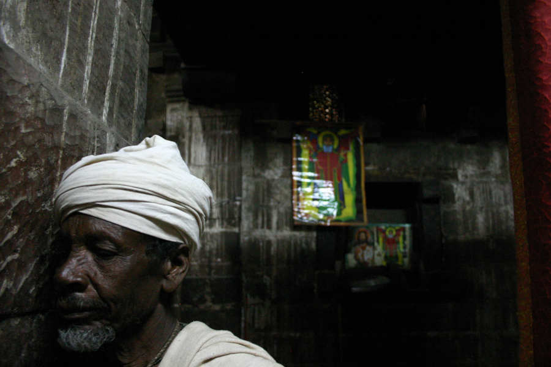

(Nigrizia settembre 2018 - qui il pdf)
Testo e foto di Fabio Artoni
Un monaco in preghiera a Betlehem, nel basso (tach) Gayint. Questa chiesa in pietra è la scuola di liturgia musicale più importante per i religiosi della chiesa ortodossa (Tewahedo) d'Etiopia, tanto da definire uno stile musicale: lo "stile betlehem". I religiosi manderanno a memoria le melodie che accompagnano i canti liturgici per poi trascriverne una propria versione su fogli di pergamena, con speciali annotazioni per l'espressività (i crescendo, i vibrati ecc...). Stabilite le regole - ma "senza" una melodia scritta secondo il pentagramma occidentale - le userannno in forma personale, con creatività.
Il lago Tana per diversi secoli è stato il centro del potere spirituale e temporale dell’Impero etiopico e da qui nasce il Nilo Azzurro. Su una barchetta a motore siamo quasi piccoli come le tanqwas di papiro dei pescatori ma il ragazzo al timone vuole essere chiamato Captain. Sull’isoletta di Daga Estifanos sono l’ultimo visitatore fuori orario di una lunga giornata di lavoro per i monaci. Un battello speciale con più di trecento persone, da Bahar Dar, ha attraccato nel piccolo molo, ha risalito nel verde la collina che porta al monastero, e lì ha incontrato i monaci che per tutto il giorno hanno squadernato codici miniati e illuminato nel buio del mausoleo le ossa mummificate di alcuni re d’Etiopia del diciasettesimo secolo. È ora di pescare ma la giornata sociale del monaco non è finita: sul cellulare trova decine di messaggini e faccine e punti esclamativi. È piu perplesso che stanco e dice che i monaci hanno bisogno di tranquillità; che ci sono regole per questo luogo sacro ed è ipocrita aggirarle; ed è per questo motivo che nel monastero non si può più entrare. È con questa prospettiva da seccatore sulla testa che proseguo il viaggio verso la chiesa di Zur Amba e poi verso Betlehem, nel Gayint, regione Amhara. Non ci sarà bisogno di arrampicarsi su guglie quanto di scalare piccole vette di diffidenza verso stranieri e gente non del posto; piccole ritrosie per proteggere la più importante scuola di musica liturgica etiopica, Betlehem Gayint.
Dal Lago Tana si segue la China Road, una lunga strada sugli altopiani che da ovest verso est porta dalla provincia di Gondar al Wollo. Al villaggio di Nefas Mewcha (letteralmente “Uscita del vento”) si abbandona la strada dei cinesi e si segue una pista per cinquanta chilometri, tra famiglie di contadini che raccolgono grano e teff. Questa pista diventerà una strada asfaltata ed è una gran bella notizia pensando a un ottimo indicatore statistico di un report della World Bank (What Studies in Spatial Development Show in Ethiopia, Part II) che spiega cosa questo significa; l’indicatore dice che in Etiopia il tasso di povertà aumenta del sette per cento ogni dieci chilometri di distanza da un mercato collegato alla rete stradale. Quindi ancora oggi la gente attorno a Betlehem è in media per un terzo più povera di quella di Nefas Mewcha, che già a prima vista aveva un’economia di sola sussistenza. Il report dice inoltre che dal 1997 al 2015 la rete stradale dell’Etiopia è quadruplicata ma che rimane una delle più basse dell’Africa e soprattutto che tale espansione non è avvenuta in maniera omogenea: degli investimenti hanno beneficiato soprattutto Addis Abeba, il Tigray e diverse aree dell’Oromia. In amhara poco e niente. Andare oltre la sussistenza è da alcuni decenni la strategia per fare crescere l’economia della Nazione; ma il monito è che i frutti dello sviluppo si devono vedere sulle tavole di tutti gli stati federati di questa nazione peso massimo dell’Africa, pena l’aumento delle disuguaglianze.
A sinistra, un monaco pesca nell'soletta di Deg Estifanos, sul lago Tana A destra, un contadino del Gayint, poco distante dal lago Tana in linea d'aria, ma un antico vulcano a scudo che arriva a oltre quattromila metri - il monte Guna - taglia le comunicazioni e bisogna seguire la China Road fino a Nefas Mewcha (letteralmente: l'uscita del vento)
La chiesa di Betlehem Gayint vista dall'esterno sembra una chiesa circolare. Lo stratagemma sorprese anche Thomas Pakenham, che negli anni Cinquanta organizzò una spedizione per visitare questa zona (ancora oggi) per nulla conosciuta dagli stranieri. In realtà sotto la struttura circolare c'è una chiesa a pianta rettangolare, in pietra, in stile axumita
A sinistra, la struttura in pietra di Betlehem Gayint, con le "teste di scimmia" evidenti. A destra l'abuna - il religioso più alto in carico - della chiesa. L'altare è, a suo dire, pre-cristiano, del periodo axumita.
A sinistra un azmari, un cantastorie, con il suo masinko, un violino moncorda che accompagna le poesie. A destra un contadino del Gayint. Durante la stagione del raccolto le famiglie uniscono le forze. Il musicista e il contadino mi inviteranno a pranzo, dandomi il posto migliore. E parafrasando Giorgio Manganelli, "mi sono sentito degradato al ruolo di persona importante"
Su Betlehem e la sua architettura c’è il lavoro di Georg Gerster (Churches in Rock. Early christian art in Ethiopia, 1970) ma c’è qualcosa di più palpitante di cui parlare. In questo posto ci sono aspiranti religiosi che per anni imparano a memoria testi e melodie di un libro sacro di inni e antifone (Deggwa) che un santo chiamato Yared pare compose in un’estasi creativa di un solo giorno. Il contrabbassista jazz Charlie Mingus costringeva i suoi musicisti ad ascoltare e a ripetere a memoria un pezzo perché: “Se ve lo scrivo poi lo suonate diversamente e invece se lo mandate a memoria lo suonerete come deve essere suonato”. Si può immaginare distanza maggiore tra le atmosfere delle jam dei musicisti di Mingus in qualche club d’America e i canti degli studenti della Chiesa Ortodossa d’Etiopia in uno sperduto monastero sugli altopiani? Eppure è quello che avviene: il Maestro (Marigeta) legge e canta e gli studenti ripetono. Per l’esame gli studenti copieranno a mano, su pergamena, una loro versione del Deggwa, appuntando su ogni rigo del testo i segni che aiutano nell’interpretazione (staccato, glissando, crescendo, diminuendo, fortepiano ecc…) e una o due o fino a tre lettere dell’alfabeto geez (che sta all’amarico odierno come il latino sta all’italiano, più o meno). Queste combinazioni di lettere sono chiamate meleket, e sono estratte dal testo letterario stesso dell’antifona; in lettura ogni singolo meleket è al tempo stesso un codice grafico, un codice letterario e un codice che richiama alla memoria una melodia; in un sistema dove testo letterario e memoria musicale si compenetrano. Il sistema di notazione di Yared, così diverso dall’efficienza del pentagramma, fa pensare più alla parola opportunità che ad arcaicità e comunque che quello occidentale non è certo l’unico dei mondi e neppure dei mood possibili. Con questa memoria musicale e letteraria, il musicista liturgico costruisce nuove frasi melodiche per nuovi inni e preghiere, seguendo una vera e propria “tecnica” improvvisativa. ll più completo studio sulla musica liturgica etiopica è quello di Kay Kaufman Shelemay, 1994; testo che questa Alan Lomax degli altopiani scrisse analizzando registrazioni nello “stile Betlehem”.Paesaggio del Tach (basso) Gayint
La contemporaneità non mi abbandona quando mi invitano a pranzo in una capanna, nel posto migliore; un posto dove, parafrasando Giorgio Manganelli, mi sento un poco degradato al ruolo di persona importante. Sotto il portico della Chiesa ci sono sedie di legno e uomini e donne coccolati dalla frescura, come in un pergolato toscano, in un patio sudamericano. Attesa della messa quotidiana mentre si parla dei raccolti, si riempiono taniche d’acqua; un posto accogliente come in una grande cucina dove si pelano insieme i fagiolini. Chissà che, a proposito di diritti umani, dopo la condanna morale dei matrimoni precoci del Patriarca Abuna Mathias, sotto quel portico si prendano decisioni quotidiane più efficaci delle campagne di comunicazione. La strada per costruire una democrazia in Etiopia è ancora lunga; in fondo bisogna ricordare che fino al 1974 l’Etiopia era ancora governata da un Imperatore, Haile Selassie, per volere divino; e quello era lo stesso anno in cui l’Olanda dei capelloni di Cruijff stupiva il mondo con il suo calcio totale. La rivoluzione del Dottor Abiy, Primo Ministro, non è detto che filerà tranquilla come un pranzo di gala, ma intanto è la prima rivoluzione che invoca con forza la pace per costruire la democrazia.